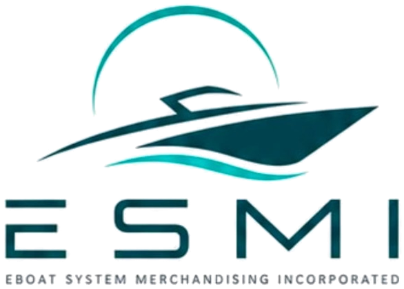
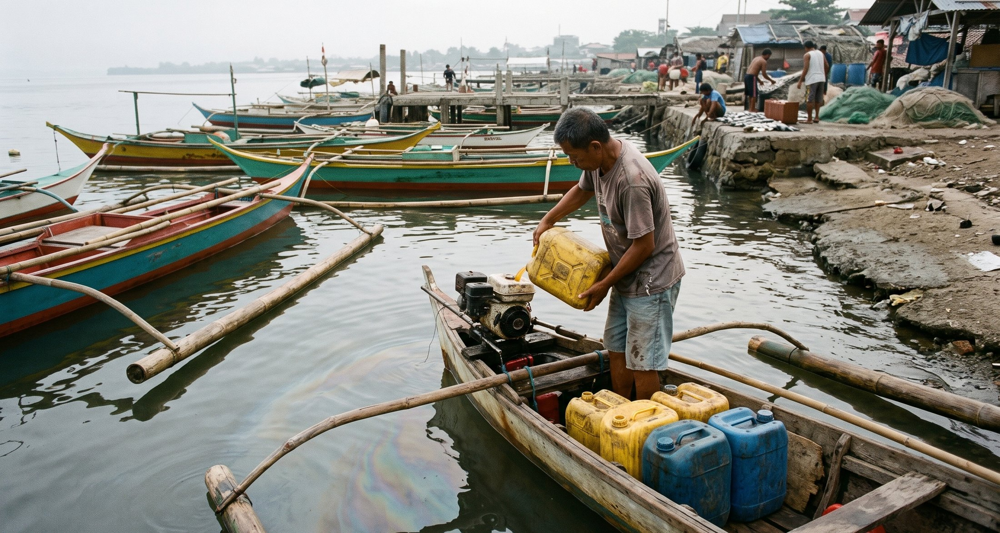
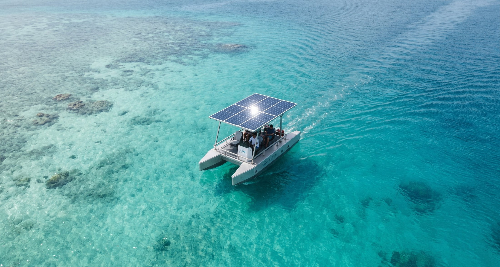
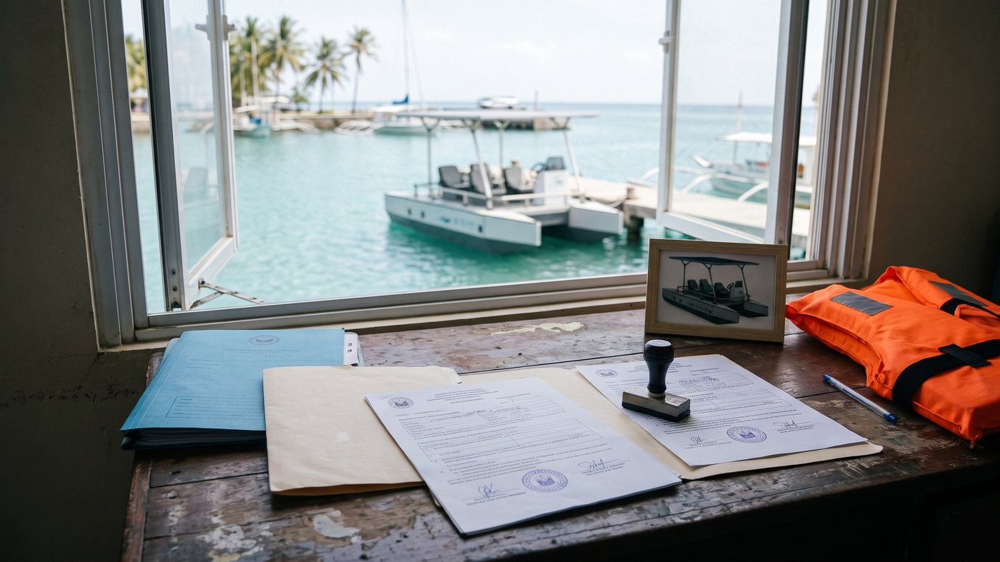
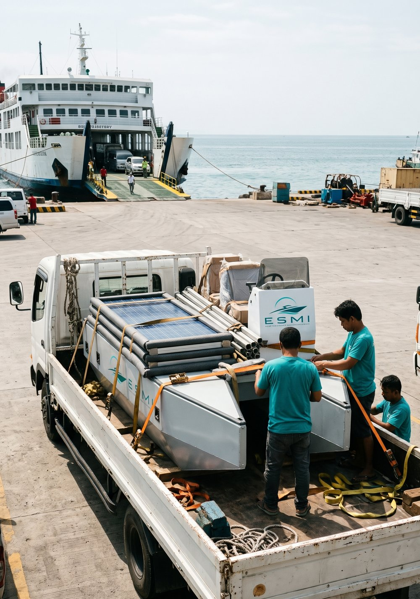
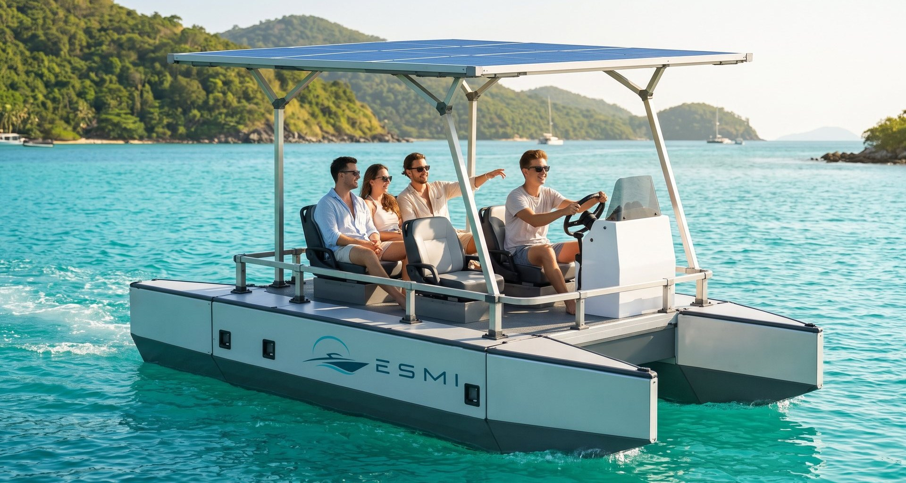
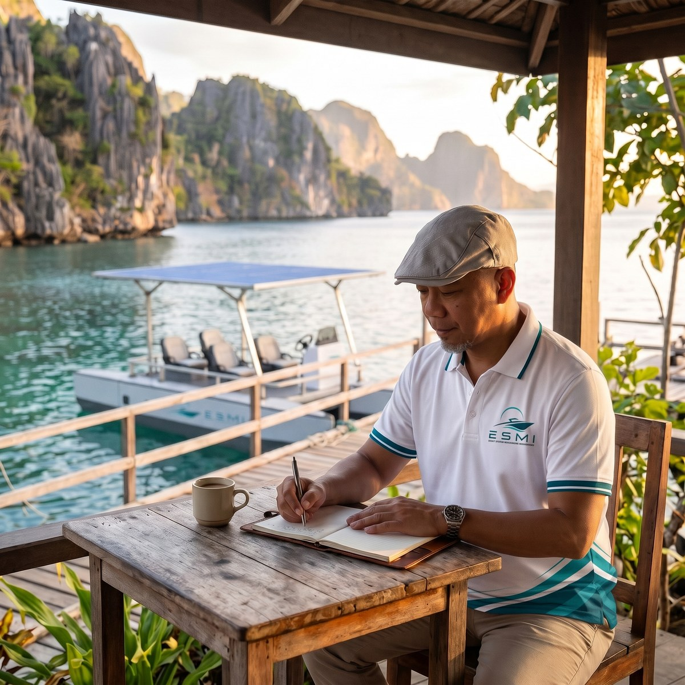

Journal
-

Fuel & costs Why rising fuel costs are pushing boat operators to rethinkIn 2026, rising fuel prices threatened the livelihoods of fishermen in Batangas, while fuel expenses in Zambales increased by approximately 73% (Philippine Daily Inquirer). In Cebu, a pumpboat operator reported that fuel costs had tripled, consuming roughly 30% of a ₱5,000 island-hopping trip's revenue (Rappler).
Explore how solar-electric boats and renewable energy-powered engines offer a cleaner, quieter and more economical alternative to traditional diesel and petrol engines. -
Field notes & community insights Listening to coastal communities — Batangas, Zambales, Palawan and beyond
Drawing on our founders' experiences in Batangas and Zambales, reinforced by field surveys in Coron, Palawan, we explore the everyday challenges faced by fishermen, boat owners and tourism operators — rising fuel costs, engine maintenance, noise pollution and the protection of fragile marine ecosystems.
-
Innovation & sustainability
Rethinking the traditional Filipino boat
Discover ESMI's expandable modular boat designs, solar-powered boat engines and plug-and-play propulsion technology, developed to reduce operating expenses, simplify maintenance and minimise environmental impact while supporting sustainable tourism and coastal livelihoods.
-

Sun & water Solar on the water: how the canopy powers the boatThe roof that shades passengers is also the power plant. How the solar canopy, the batteries and the electric drive work together to keep energy use as low as possible.
-

Rules & safety Registering an electric boat in the PhilippinesCertificate of Philippine Registry, Certificate of Ownership, Certificate of Public Convenience, Coast Guard inspections: a plain-language guide to the paperwork, and how we help operators prepare it.
-

Modules & transport How a modular boat travelsHull sections, deck panels, posts, solar roof and seats: an ESMI boat comes apart into modules that fit on a truck or in a container, crosses on a ferry, and is assembled on the shore where it will work.
-

Tourism & tomorrow Palawan's tourism boom and the case for quieter boatsPalawan welcomed more than 2.1 million tourists in 2025. As El Nido and Coron face growing pressure on their lagoons and reefs, quieter, fuel-free boats can help operators grow without adding noise and fumes.

Journal
news & notes
Through this Journal, co-founders June Delgado and Herbert Villadelrey and the ESMI team share industry news, research, field notes and practical guides on sustainable boating in the Philippines — from fuel costs, renewable energy and boat registration to how our modular solar-electric boats and plug-and-play solar-powered boat engines are built, delivered, installed and operated.
New articles will be added as our initial pilot deployments get underway in Batangas and Zambales, followed by our expansion across the Philippine archipelago.